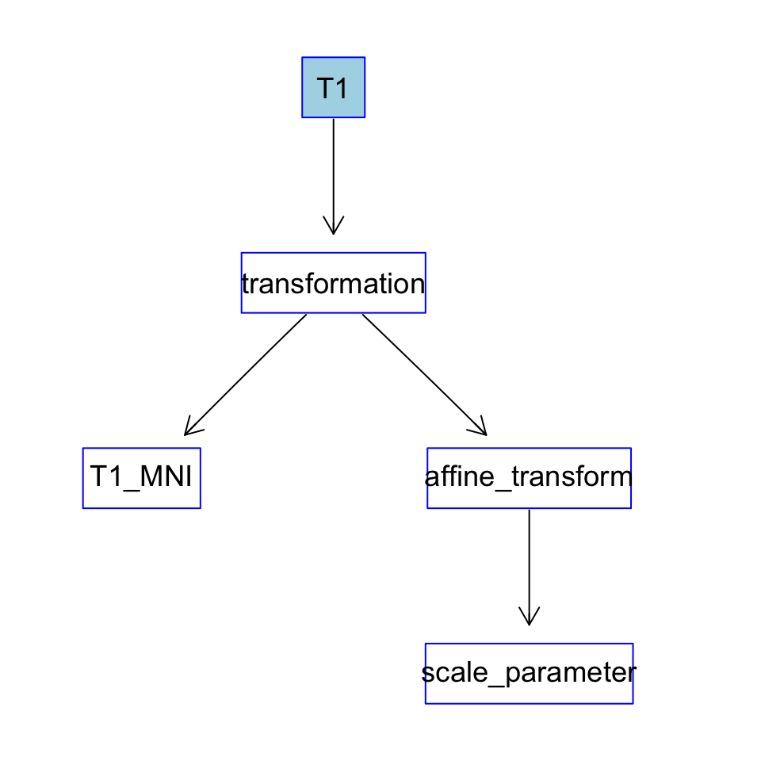
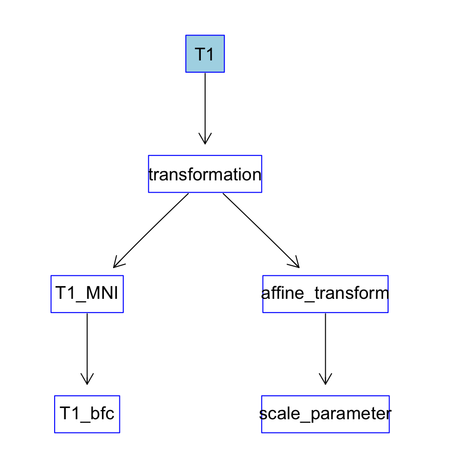
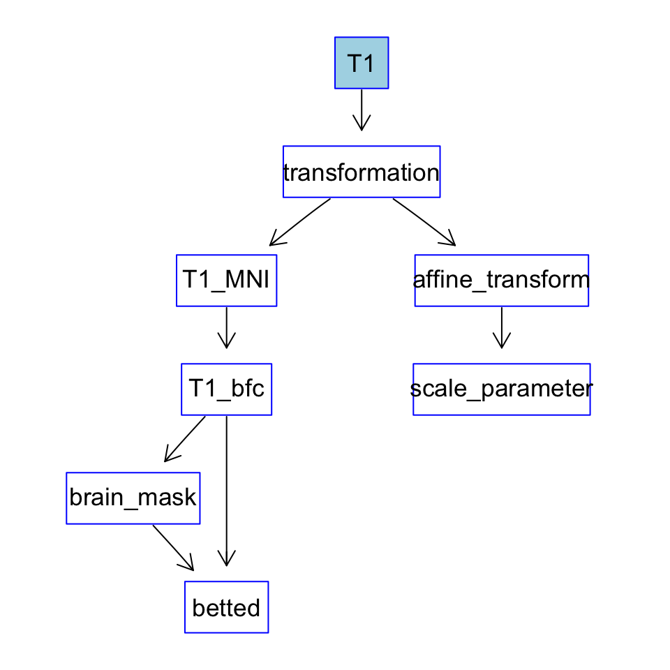
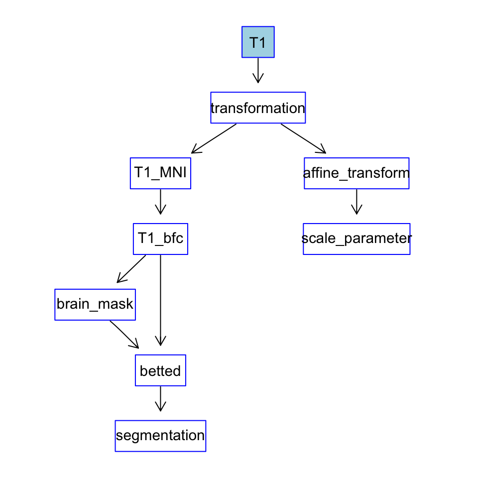
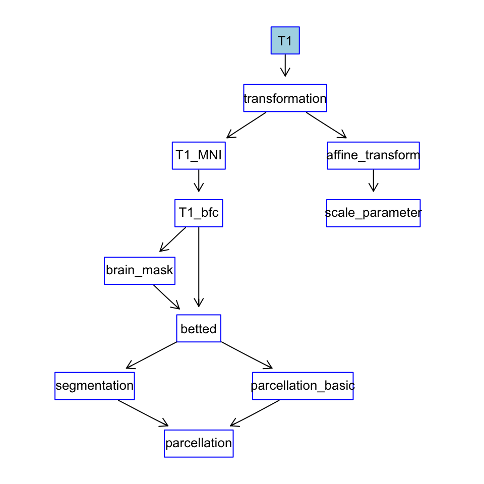
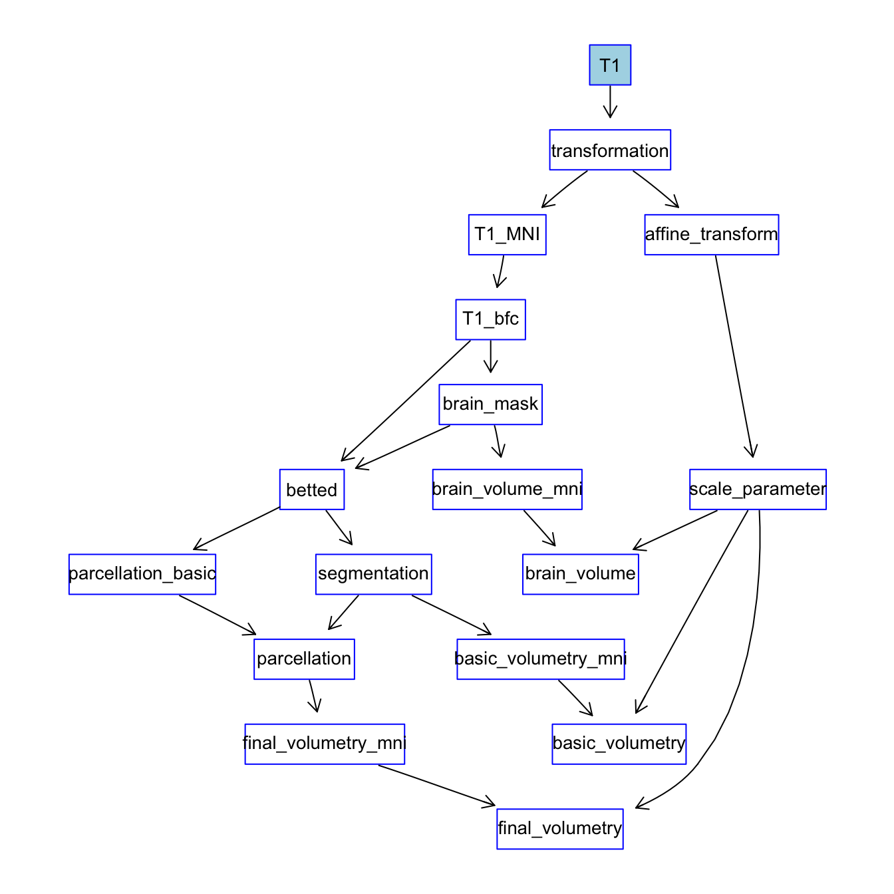
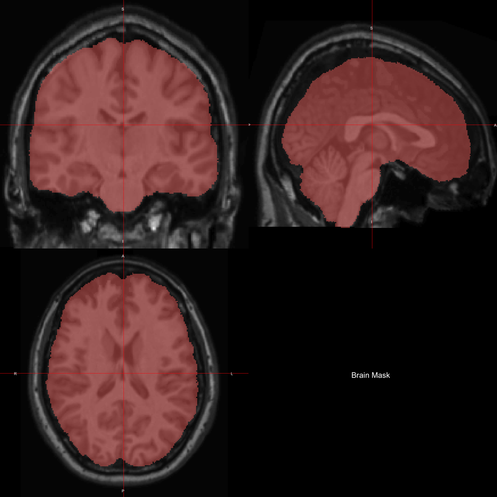
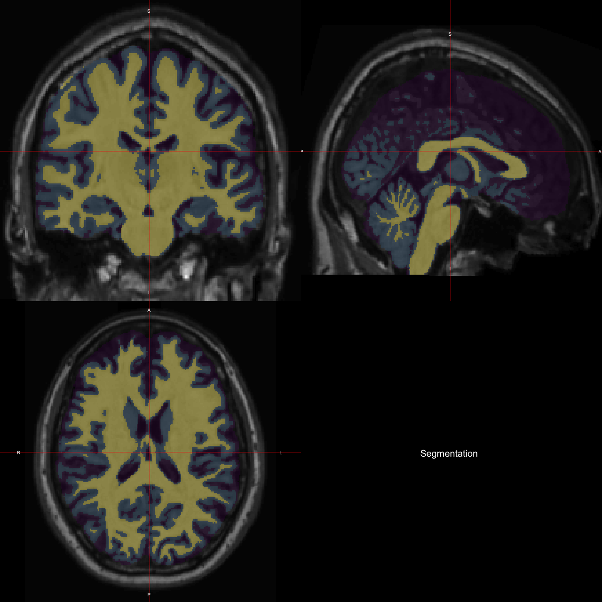
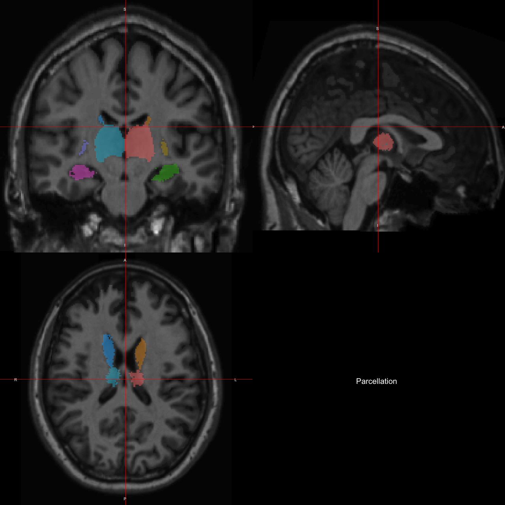

wf4ni to Build a Volumetry Flowvignettes/volumetry.Rmd
volumetry.RmdIn this vignette, we’re going to develop a volumetry pipeline (workflow) to quantify the volume of subcortical nuclei, using the wf4ni package.
The main steps in this pipeline will be:
To demonstrate the flexibility of wf4ni, we’ll use different R packages to perform several of the above steps.
It must be noted that the philosophy of wf4ni is to separate the pipeline logic from its implementation. So, the same workflow could be used just changing, if needed, the implementation of any (or all) of the steps above.
The organization of this vignette is as follows. First, we’ll describe the dependencies or packages needed to run the workflow. Later, we’ll describe the workflow, step by step, without presenting the actual implementation of the functions used. Then, we’ll use some sample data to run an experiment with the workflow, presenting its results. We’ll end the vignette with an annex in which we’ll present the actual implementation of the functions.
We consider two types of requirements: packages needed to perform the key steps in the workflow and data which may be necessary at any step of the computation.
First, obviously, the wf4ni package:
library(wf4ni)
#>
#> Attaching package: 'wf4ni'
#> The following object is masked from 'package:base':
#>
#> mergeOther packages needed at some point of the workflow are loaded by:
library(tidyverse)
library(ANTsRCore)
library(ANTsR)
library(extrantsr)
library(neurobase)
library(oro.nifti)
library(fslr)
library(scales)ANTsRCore, ANTsR and extrantsr are going to be used for input/output tasks as well as for different processes. fslr will be used to segment the image into tissue types.
neurobase and oro.nifti are mainly used for input/output and to plot nifti objects.
The tidyverse simplifies many of the processes in the functions.
The scales library is used just for assigning colors in an automatic way in graphics.
At the beginning of the workflow, we need a template image in order to reorient our input into MNI space. We’ll use the “MNI152_T1_1mm” template file available, for example, from FSL companion data.
On the other hand, we intend to use the MALF (Multi-Atlas Label Fusion) algorithm, present in the ANTsR package, in two cases:
Thus, we’ll need sample data of images manually labelled for both of these tasks.
Brain MRIs with its corresponding skull-stripped versions are available for free at the Neurofeedback Skull-stripped (NFBS) repository.
On the other hand, we’ll use data from Mindboggle101 consisting in brain images with corresponding manual labellings.
The volumetry workflow will be a NIflow object. To create such object, one needs to provide a name, a work_dir where to store temporary results, and the name of the inputs needed to execute the workflow. In this case, our pipeline will only need a T1 image to obtain the results.
In the next sections, we’ll provide the complete structure of the workflow, just by using skeletons of the functions needed.
In this task, we’ll use a function (from the ANTsR package) to compute the (affine) transformation from our input image to a standard template. Once we have the transformation given by the register_to_template function, we have to explicitly compute the transformed image, the affine matrix and the scale parameter (the determinant of the affine matrix).
# - register to a template (MNI152 in case of structural imaging)
# Returns the transformation, as declared in the ANTsRCore package
register_to_template <- function(image, template) {
#...
}
# Returns the image reoriented in the template space
get_img_in_template <- function(tx) {
#...
}
# Returns the affine transformation
get_tx_to_template <- function(tx) {
#...
}
# Returns the scale parameter as the determinant of the affine transformation
get_scale_parameter <- function(M) {
#...
}The template that we’ll use is located in (change to your local installation, if needed):
We add the previous functions as steps in our workflow, stating clearly the inputs needed in each step, as well as the output provided in each one. Note that the add function allows for extra arguments (in particular, argument template to function register_to_template) for the functions used in the step. In this case, T1_MNI stands for T1 image in MNI space.
volumetry_flow$add(what = register_to_template,
inputs = "T1",
output = "transformation",
template = template)
volumetry_flow$add(what = get_img_in_template,
inputs = "transformation",
output = "T1_MNI")
volumetry_flow$add(what = get_tx_to_template,
inputs = "transformation",
output = "affine_transform")
volumetry_flow$add(what = get_scale_parameter,
inputs = "affine_transform",
output = "scale_parameter")Alternatively, one could simply use the %>% (pipe) operator to concatenate the operations, as follows:
volumetry_flow %>%
add(what = register_to_template,
inputs = "T1",
output = "transformation",
template = template) %>%
add(what = get_img_in_template,
inputs = "transformation",
output = "T1_MNI") %>%
add(what = get_tx_to_template,
inputs = "transformation",
output = "affine_transform") %>%
add(what = get_scale_parameter,
inputs = "affine_transform",
output = "scale_parameter")With this little effort, we have built the following flow:

Next step is correction of the intensity inhomogeneities, using ANTsR package.
# - bias field correction, just a simple wrapper around
# n4BiasFieldCorrection
bfc <- function(img) {
#...
}We add this step, which will be applied on the T1_MNI step before, and will provide with an image named T1_bfc:
Flow up to now is as follows:

The function to perform brain extraction uses the MALF technique implemented in the ANTsR package. Thus, we need to provide template images and template label images to this function.
# - brain extraction
# Uses MALF technique with a "brain extraction" dataset
# Returns the brain mask
make_brain_extraction <- function(image,
template_images,
template_structs) {
#...
}Now, we make a list of the template images and labels that we have (see Requirements section) and provide it as extra arguments in the flow:
template_folder <- file.path(".", "resources", "volumetry", "bet")
template_images_bet <- list.files(path = file.path(template_folder,
"images"),
pattern = ".nii.gz",
full.names = TRUE)
template_structs_bet <- list.files(path = file.path(template_folder,
"masks"),
pattern = ".nii.gz",
full.names = TRUE)volumetry_flow$add(what = make_brain_extraction,
inputs = "T1_bfc",
output = "brain_mask",
template_images = template_images_bet,
template_structs = template_structs_bet)
volumetry_flow$add(what = function(A, B) {A * B},
inputs = c("T1_bfc", "brain_mask"),
output = "betted")This last function computes the brain-extracted image. Since the brain_mask consists of 0s and 1s, multiplying it by the bias-field-corrected image will produce the skull-stripped (betted) image.

The segmentation step will be performed by FSL by means of the fslr package. It needes a brain extracted image as input. Since we have it computed in the previous step, we’ll use as the input for this function.
# - segmentation (GM, WM an CSF)
# Uses FSL's FAST tool to find a segmentation into GM, WM and CSF
# Returns the segmentation as a labelled image with labels 0 (background),
# 1 (CSF), 2 (GM) and 3 (WM)
get_segmentation <- function(img, mask = NULL) {
#...
}Thus, the flow in this step is updated simply by doing:

Another key step of the workflow is the anatomical labelling, also based on the MALF technique. We’ll need a skull-stripped image and template images and labels.
# - parcellation
# Uses MALF technique with a previously labelled dataset
make_subcortical_parcellation <- function(image,
mask = NULL,
template_images,
template_structs) {
#...
}
# Removes CSF voxels from the parcellation
refine_parcellation <- function(parcellation, segmentation) {
#...
}We also use the segmentation information to refine the parcellation, just by removing CSF voxels form the subcortical nuclei delimited in the previous function.
We list all the template images and labels to be used in this step:
template_folder <- file.path(".", "resources", "volumetry", "parcellation")
template_images_parc <- list.files(path = file.path(template_folder,
"images"),
pattern = ".nii.gz",
full.names = TRUE)
template_structs_parc <- list.files(path = file.path(template_folder,
"masks"),
pattern = ".nii.gz",
full.names = TRUE)And use them as extra arguments for the make_subcortical_parcellation function in this step:
volumetry_flow$add(what = make_subcortical_parcellation,
inputs = "betted",
output = "parcellation_basic",
template_images = template_images_parc,
template_structs = template_structs_parc)
volumetry_flow$add(what = refine_parcellation,
inputs = c("parcellation_basic", "segmentation"),
output = "parcellation")Without the quantification part, this is the flow we are building:

We define a function that computes the number of voxels for each region of interest labelled in an image.
We use repeatedly this function to count voxels inside the brain, inside each type of tissue, and in each of the subcortical nuclei. These are estimations of volumes in MNI space (where the volume of a single voxel is 1mm^3). To compute the actual real volume, we must multiplicate this MNI volume by the scale parameter derived from the affine transformation in the first step.
volumetry_flow$add(what = count_by_ROI,
inputs = "brain_mask",
output = "brain_volume_mni")
volumetry_flow$add(what = function(A, B) {A * B},
inputs = c("brain_volume_mni", "scale_parameter"),
output = "brain_volume")
volumetry_flow$add(what = count_by_ROI,
inputs = "segmentation",
output = "basic_volumetry_mni")
volumetry_flow$add(what = function(A, B) {A * B},
inputs = c("basic_volumetry_mni", "scale_parameter"),
output = "basic_volumetry")
volumetry_flow$add(what = count_by_ROI,
inputs = "parcellation",
output = "final_volumetry_mni")
volumetry_flow$add(what = function(A, B) {A * B},
inputs = c("final_volumetry_mni", "scale_parameter"),
output = "final_volumetry")With these last additions, the flow is as follows:

We can also obtain a brief summary of the flow by typing:
summary(volumetry_flow)
#> NIflow object with:
#> name: volumetry
#> inputs: T1
#> outputs: transformation, T1_MNI, affine_transform, scale_parameter, T1_bfc, brain_mask, betted, segmentation, parcellation_basic, parcellation, brain_volume_mni, brain_volume, basic_volumetry_mni, basic_volumetry, final_volumetry_mni, final_volumetry
#> Currently using 2.06 MB of memory.
#> Summary of processes:
#> transformation needs T1 as inputs.
#> T1_MNI needs transformation as inputs.
#> affine_transform needs transformation as inputs.
#> scale_parameter needs affine_transform as inputs.
#> T1_bfc needs T1_MNI as inputs.
#> brain_mask needs T1_bfc as inputs.
#> betted needs T1_bfc, brain_mask as inputs.
#> segmentation needs betted as inputs.
#> parcellation_basic needs betted as inputs.
#> parcellation needs parcellation_basic, segmentation as inputs.
#> brain_volume_mni needs brain_mask as inputs.
#> brain_volume needs brain_volume_mni, scale_parameter as inputs.
#> basic_volumetry_mni needs segmentation as inputs.
#> basic_volumetry needs basic_volumetry_mni, scale_parameter as inputs.
#> final_volumetry_mni needs parcellation as inputs.
#> final_volumetry needs final_volumetry_mni, scale_parameter as inputs.To illustrate how this workflow can be used, let us suppose that we have all the functions mentioned before already implemented (an example implementation is given in the Annex), and build the workflow as in the previous steps. We’ll apply this flow to compute the brain mask, the segmentation, the parcellation and the volumes of brain, tissues and subcortical nuclei.
Let us inspect the different results:
#> brain_volume
#> 1664779#> CSF GM WM
#> 390287.2 651682.9 622726.1names(res$final_volumetry) <- c("left thalamus proper",
"left caudate", "left putamen",
"left pallidum", "left hippocampus",
"left amygdala", "right thalamus proper",
"right caudate", "right putamen",
"right pallidum", "right hippocampus",
"right amygdala")
res$final_volumetry#> left thalamus proper left caudate left putamen
#> 10435.434 4352.073 6457.049
#> left pallidum left hippocampus left amygdala
#> 2098.019 4952.359 1231.381
#> right thalamus proper right caudate right putamen
#> 10135.291 4704.890 6403.381
#> right pallidum right hippocampus right amygdala
#> 2193.429 5508.915 1256.227Also, using this function (a simple extension of neurobase’s ortho2 function), we can inspect the volumes provided as results of the workflow execution:
# Plot an anatomical image with an overlay
plot_overlay <- function(image, overlay, text = "") {
label_ids <- overlay %>% as.vector() %>% unique() %>% sort()
label_ids <- label_ids[-1]
overlay <- remap_labels(img = overlay)
num_classes <- length(label_ids) + 1
col.y <- alpha(colour = hue_pal()(num_classes), alpha = 0.45)
if (num_classes == 4)
col.y <- alpha(colour = viridis_pal()(num_classes), alpha = 0.3)
ortho2(x = image, y = overlay, col.y = col.y, text = text)
}The brain mask:

The segmented image:

The anatomical parcellation:

The NIflow object stores internally a log of all the processes that it goes through and the memory used to store its internal results:
#> (2019-04-28 23:55:14) [DEBUG] Adding process with inputs: T1 and output(s): transformation
#> (2019-04-28 23:55:15) [DEBUG] Adding process with inputs: transformation and output(s): T1_MNI
#> (2019-04-28 23:55:15) [DEBUG] Adding process with inputs: transformation and output(s): affine_transform
#> (2019-04-28 23:55:15) [DEBUG] Adding process with inputs: affine_transform and output(s): scale_parameter
#> (2019-04-28 23:55:15) [DEBUG] Adding process with inputs: T1_MNI and output(s): T1_bfc
#> (2019-04-28 23:55:15) [DEBUG] Adding process with inputs: T1_bfc and output(s): brain_mask
#> (2019-04-28 23:55:15) [DEBUG] Adding process with inputs: T1_bfc, brain_mask and output(s): betted
#> (2019-04-28 23:55:15) [DEBUG] Adding process with inputs: betted and output(s): segmentation
#> (2019-04-28 23:55:15) [DEBUG] Adding process with inputs: betted and output(s): parcellation_basic
#> (2019-04-28 23:55:15) [DEBUG] Adding process with inputs: parcellation_basic, segmentation and output(s): parcellation
#> (2019-04-28 23:55:15) [DEBUG] Adding process with inputs: brain_mask and output(s): brain_volume_mni
#> (2019-04-28 23:55:15) [DEBUG] Adding process with inputs: brain_volume_mni, scale_parameter and output(s): brain_volume
#> (2019-04-28 23:55:16) [DEBUG] Adding process with inputs: segmentation and output(s): basic_volumetry_mni
#> (2019-04-28 23:55:16) [DEBUG] Adding process with inputs: basic_volumetry_mni, scale_parameter and output(s): basic_volumetry
#> (2019-04-28 23:55:16) [DEBUG] Adding process with inputs: parcellation and output(s): final_volumetry_mni
#> (2019-04-28 23:55:16) [DEBUG] Adding process with inputs: final_volumetry_mni, scale_parameter and output(s): final_volumetry
#> (2019-04-28 23:55:17) [DEBUG] Reading input T1 from file ./resources/volumetry/input/t1.nii.gz
#> (2019-04-28 23:55:21) [DEBUG] Memory used at init: 57.78 MB
#> (2019-04-28 23:55:21) [DEBUG] Switching tempdir to: /Users/domingo/flow/volumetry
#> (2019-04-28 23:55:21) [DEBUG] Computing transformation...
#> (2019-04-28 23:55:32) [DEBUG] Memory used after computation: 57.78 MB
#> (2019-04-28 23:55:32) [DEBUG] Removed intermediate outputs: T1
#> (2019-04-28 23:55:32) [DEBUG] Memory used after cleanup: 3.06 kB
#> (2019-04-28 23:55:32) [DEBUG] Computing T1_MNI...
#> (2019-04-28 23:55:38) [DEBUG] Memory used after computation: 57.78 MB
#> (2019-04-28 23:55:41) [DEBUG] Computing T1_bfc...
#> (2019-04-28 23:56:21) [DEBUG] Memory used after computation: 115.56 MB
#> (2019-04-28 23:56:25) [DEBUG] Removed intermediate outputs: T1_MNI
#> (2019-04-28 23:56:25) [DEBUG] Memory used after cleanup: 57.78 MB
#> (2019-04-28 23:56:25) [DEBUG] Computing brain_mask...
#> (2019-04-29 00:06:32) [DEBUG] Memory used after computation: 115.56 MB
#> (2019-04-29 00:06:35) [DEBUG] Computing betted...
#> (2019-04-29 00:06:36) [DEBUG] Memory used after computation: 173.33 MB
#> (2019-04-29 00:06:38) [DEBUG] Computing segmentation...
#> (2019-04-29 00:09:28) [DEBUG] Memory used after computation: 202.23 MB
#> (2019-04-29 00:09:31) [DEBUG] Computing parcellation_basic...
#> (2019-04-29 00:20:46) [DEBUG] Memory used after computation: 260 MB
#> (2019-04-29 00:20:47) [DEBUG] Removed intermediate outputs: betted
#> (2019-04-29 00:20:48) [DEBUG] Memory used after cleanup: 202.23 MB
#> (2019-04-29 00:20:48) [DEBUG] Computing parcellation...
#> (2019-04-29 00:20:48) [DEBUG] Memory used after computation: 260 MB
#> (2019-04-29 00:20:51) [DEBUG] Removed intermediate outputs: parcellation_basic
#> (2019-04-29 00:20:51) [DEBUG] Memory used after cleanup: 202.23 MB
#> (2019-04-29 00:20:51) [DEBUG] Computing affine_transform...
#> (2019-04-29 00:20:51) [DEBUG] Memory used after computation: 202.23 MB
#> (2019-04-29 00:20:51) [DEBUG] Removed intermediate outputs: transformation
#> (2019-04-29 00:20:52) [DEBUG] Memory used after cleanup: 202.22 MB
#> (2019-04-29 00:20:52) [DEBUG] Computing scale_parameter...
#> (2019-04-29 00:20:52) [DEBUG] Memory used after computation: 202.22 MB
#> (2019-04-29 00:20:52) [DEBUG] Removed intermediate outputs: affine_transform
#> (2019-04-29 00:20:52) [DEBUG] Memory used after cleanup: 202.22 MB
#> (2019-04-29 00:20:52) [DEBUG] Computing brain_volume_mni...
#> (2019-04-29 00:20:53) [DEBUG] Memory used after computation: 202.22 MB
#> (2019-04-29 00:20:53) [DEBUG] Computing brain_volume...
#> (2019-04-29 00:20:53) [DEBUG] Memory used after computation: 202.22 MB
#> (2019-04-29 00:20:53) [DEBUG] Removed intermediate outputs: brain_volume_mni
#> (2019-04-29 00:20:54) [DEBUG] Memory used after cleanup: 202.22 MB
#> (2019-04-29 00:20:54) [DEBUG] Computing basic_volumetry_mni...
#> (2019-04-29 00:20:54) [DEBUG] Memory used after computation: 202.23 MB
#> (2019-04-29 00:20:54) [DEBUG] Computing basic_volumetry...
#> (2019-04-29 00:20:54) [DEBUG] Memory used after computation: 202.23 MB
#> (2019-04-29 00:20:54) [DEBUG] Removed intermediate outputs: basic_volumetry_mni
#> (2019-04-29 00:20:54) [DEBUG] Memory used after cleanup: 202.23 MB
#> (2019-04-29 00:20:54) [DEBUG] Computing final_volumetry_mni...
#> (2019-04-29 00:20:54) [DEBUG] Memory used after computation: 202.23 MB
#> (2019-04-29 00:20:54) [DEBUG] Computing final_volumetry...
#> (2019-04-29 00:20:54) [DEBUG] Memory used after computation: 202.23 MB
#> (2019-04-29 00:20:54) [DEBUG] Removed intermediate outputs: scale_parameter, final_volumetry_mni
#> (2019-04-29 00:20:54) [DEBUG] Memory used after cleanup: 202.23 MB
#> (2019-04-29 00:20:54) [DEBUG] Switching to base tempdir
#> (2019-04-29 00:20:54) [DEBUG] Computed all resultsIn this annex, we provide example code for the volumetry workflow, which can be loaded and used to replicate the workflow and results given in this vignette.
# - register to a template (MNI152 in case of structural imaging)
# Returns the transformation, as declared in the ANTsRCore package
register_to_template <- function(image, template) {
image <- check_ants(image)
template <- check_ants(template)
transform <- antsRegistration(fixed = template,
moving = image,
typeofTransform = "AffineFast",
verbose = TRUE)
return(transform)
}
# Returns the image reoriented in the template space
get_img_in_template <- function(tx) {
check_nifti(tx$warpedmovout)
}
# Returns the affine transformation
get_tx_to_template <- function(tx) {
matrix(read_transformlist(tx$fwdtransforms)[[1]]$AffineTransform.float.3.3[1:9],
nrow = 3, ncol = 3)
}
# Returns the scale parameter as the determinant of the affine transformation
get_scale_parameter <- function(M) {
det(M)
}# - bias field correction, just a simple wrapper around
# n4BiasFieldCorrection
bfc <- function(img) {
image2 <- as.antsImage(img)
image2 <- n4BiasFieldCorrection(img = image2, verbose = TRUE)
return(ants2oro(image2, reference = img))
}# - brain extraction
# Uses MALF technique with a "brain extraction" dataset
# Returns the brain mask
make_brain_extraction <- function(image,
template_images,
template_structs) {
my_image <- checkimg(image)
res <- malf(infile = my_image,
template.images = template_images,
template.structs = template_structs,
typeofTransform = "SyN",
verbose = FALSE)
return(res)
}# - segmentation (GM, WM an CSF)
# Uses FSL's FAST tool to find a segmentation into GM, WM and CSF
# Returns the segmentation as a labelled image with labels 0 (background),
# 1 (CSF), 2 (GM) and 3 (WM)
get_segmentation <- function(img, mask = NULL) {
if (!is.null(mask)) {
input <- img
input[mask == 0] <- 0
} else {
input <- img
}
my_file <- tempimg(input)
res_file <- fsl_fast_nobias(file = my_file, retimg = TRUE)
res_file <- gsub(pattern = ".nii.gz",
replacement = "",
x = res_file)
res_file <- paste0(res_file, "_pveseg.nii.gz")
return(check_nifti(res_file))
}# Remaps labels given by values = (l1, l2, l3, ...) present in the image img
# to numbers (1, 2, 3, ...) to make MALF easier.
remap_labels <- function(img, values = NULL) {
if (is.null(values)) {
values <- img %>% as.vector() %>% unique() %>% sort()
values <- values[values > 0]
}
res <- 0 * img
for (k in seq_along(values)) {
res[img == values[k]] <- k
}
return(res)
}# - parcellation
# Uses MALF technique with a previously labelled dataset
make_subcortical_parcellation <- function(image,
mask = NULL,
template_images,
template_structs) {
num_subjects <- length(template_images)
# Subcortical structures labels
retain_structs <- c(10, 11, 12, 13, 17, 18, 49:54)
# Read label images
out <- lapply(template_structs, readnii)
out1 <- out[[1]]
# Remap subcortical labels to 1, 2, ...
out2 <- lapply(out,
function(s) remap_labels(s@.Data,
values = retain_structs))
# Save the remapped images to file
my_outputs <- sapply(seq(num_subjects),
function(i) {
out1@.Data <- out2[[i]]
tempimg(nim = out1)
})
if (!is.null(mask)) {
input <- image
input[mask == 0] <- 0
} else {
input <- image
}
# Apply MALF
res <- malf(infile = input,
template.images = template_images,
template.structs = my_outputs,
typeofTransform = "SyN",
verbose = FALSE)
return(res)
}
# Removes CSF voxels from the parcellation
refine_parcellation <- function(parcellation, segmentation) {
parcellation[segmentation <= 1] <- 0
return(parcellation)
}